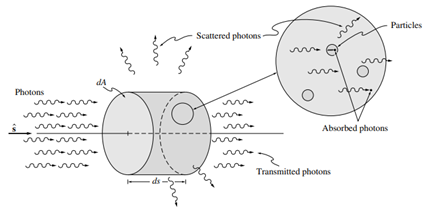

4 Interacciones con la frontera
propiedades de radiación de los medios participantes. es decir, cómo una sustancia puede absorber, emitir y dispersar la radiación térmica
A continuación, desarrollaremos expresiones para esta atenuación para un haz de luz que viaja dentro de un haz de rayos en la dirección \(\hat{s}\).
4.0.1 ATENUACIÓN POR ABSORCIÓN Y DISPERSIÓN
Si el medio a través del cual viaja la energía radiativa es “participante”, entonces cualquier haz incidente se atenuará por absorción y dispersión mientras viaja a través del medio (Modest)

Absorción
\[ dI_{\eta} = -\kappa_{\eta} I_{\eta}\, ds \]
donde la constante de proporcionalidad \(\kappa\) se conoce como el coeficiente de absorción (lineal), y el signo negativo se ha introducido ya que la intensidad disminuye
La integración de la ecuación sobre una trayectoria geométrica s da como resultado: (NO ES ESTA INTEGRAL)
\[ \tau_{\eta} = \int_{0}^{s} \kappa_{\eta}\, ds \]
Donde \(\tau\) es el espesor óptico (de absorción) a través del cual ha viajado el haz e Iη(0) es la intensidad que entra en el medio en \(s = 0\). Nótese que el coeficiente de absorción (lineal) es el inverso del camino libre medio de un fotón hasta que se absorbe.
Scattering o dispersión
\[ (dI_{\eta})_{\mathrm{sca}} = -\sigma_{s\eta} I_{\eta}\, ds \]
Donde la constante de proporcionalidad \(\sigma_{s\eta}\) es el coeficiente de dispersión (lineal) para la dispersión del haz de rayos considerado en todas las demás direcciones.
Coeficiente de extinsión
Es la atenuación total de la intensidad de un haz de rayos debido tanto a la absorción como a la dispersión se conoce como extinción. Por lo tanto, el coeficiente de extinción se define como:
\[ \beta_{\eta} = \kappa_{\eta} + \sigma_{s\eta} \]
4.0.2 AUMENTO POR EMISIÓN Y DISPERSIÓN
Un haz de luz que viaja a través de un medio participante en la dirección \(\hat{s}\) pierde energía por absorción y por dispersión en dirección opuesta a la de su propagación. Pero al mismo tiempo, también gana energía por emisión, así como por dispersión desde otras direcciones hacia la dirección de propagación \(\hat{s}\).
Emisión
\[ (dI_{\eta})_{\mathrm{em}} = j_{\eta}\, d = \kappa_{\eta} I_{b\eta}\, ds \]
donde \(j_{\eta}\) se denomina coeficiente de emisión. Dado que, en equilibrio termodinámico local, la intensidad en todas partes debe ser igual a la intensidad del cuerpo negro,
\[ j_{\eta} = \kappa_{\eta} I_{b\eta} \]
In-scatering
Este último es más dificil de explicar, hay q explicar con imágenes
4.1 Interacción volumétricas y superficiales
BLA BLA BLA